My House · C10
One design, fitted to both slopes of the field
Claude Code (Fable) · 18 Nov 2026 · based on your own 0109-r5 layouts through C08 and C09 · your request: stmt-026
The idea in one minute
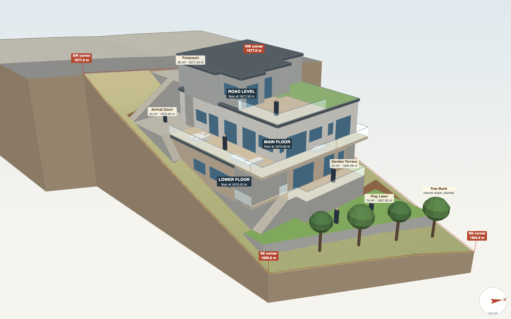
- Three floors step down the hill. Road level: garage, front door, office. Main floor: kitchen, dining, living and the parents. Lower floor: children, grandparents, lounge and the garden. One stair and one lift join all three.
- Each floor sits further east than the one above. So the roof of one floor is the terrace of the next, and the deepest dig is about 4 m.
- Rooms are placed by the ground, not by a grid. Your field falls two ways. Where the ground is at or below a floor, that floor gets bedrooms, living rooms and terraces. Where the floor is buried, it gets the stair, bathrooms, laundry and stores.
- South and east are for living. Kitchen with its south terrace, dining, living, every bedroom and the lounge face south or east. Nothing but service rooms faces the hill.
- The garden follows the hill too. One level play lawn lies along the contour, where the hill already has that height. Below it the slope stays as it is and carries the trees.
The 3D model: turn it, open it, look inside
This is the real model, in true scale. Drag to turn it and scroll to zoom. The buttons along the top change what you see: the whole house, the bare field, the digging, or one floor with everything above it lifted off. Open the 3D model full screen
If the box stays empty, your browser has 3D switched off. The still pictures on this page come from the same model.
Your field, and how the house sits on it
- Main slope, west → east. The road side is at about 1677.2 m. The east boundary is at about 1665.5 m. The field falls about 12 m over 30 m: more than 1 m down for every 3 m forward.
- Cross slope, north → south. Along any line across the field the south side is about 2.5 to 3 m lower than the north side. So the lowest corner is the south-east (1665.9 m) and the most buried corner of any floor is its north-west.
- What that does to a floor. The lower floor is at 1670.00. On the north side the ground only drops to that height 16.2 m from the west. On the south side it gets there after 10.5 m. The line between those two points runs diagonally through the house, and the plan follows it.
- Directions. As in all earlier drawings, “east” means down the hill, along your north boundary. By the compass that is east-north-east, so the “south” side really faces south-south-east. Good for sun.
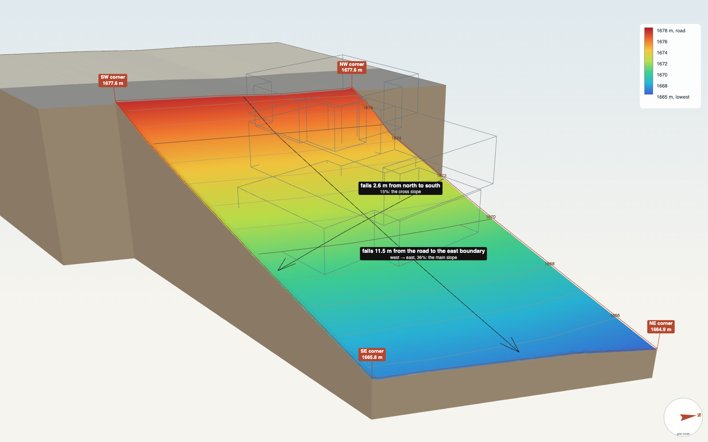

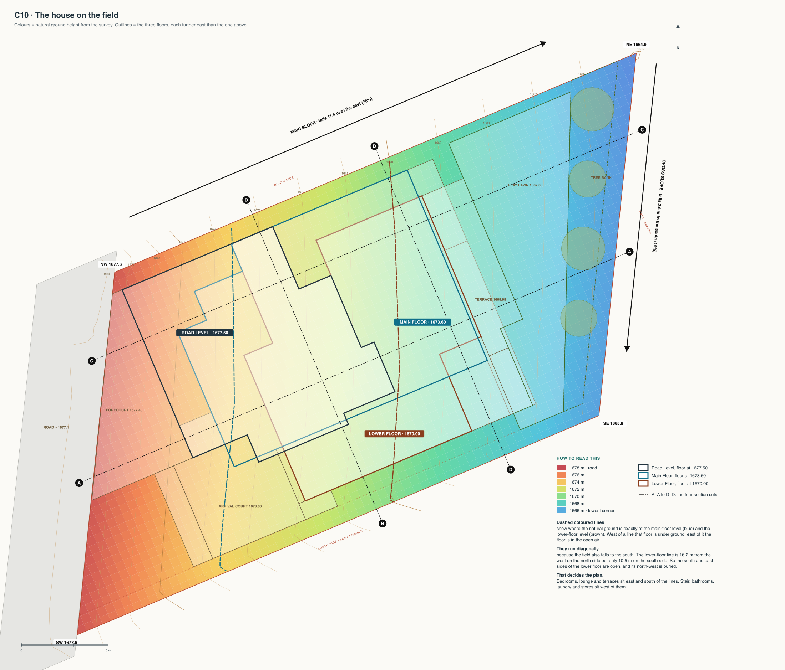
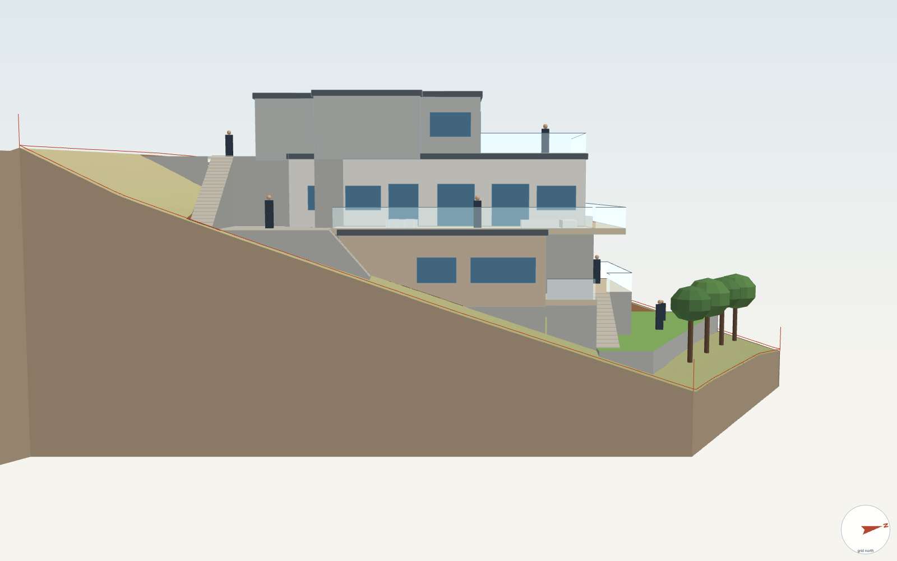
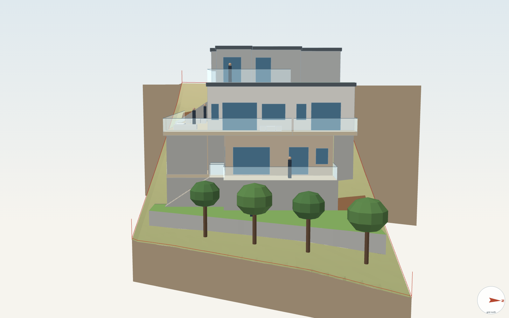
Road Level
You arrive here, by car or on foot. Floor at 1677.50, level with the road.
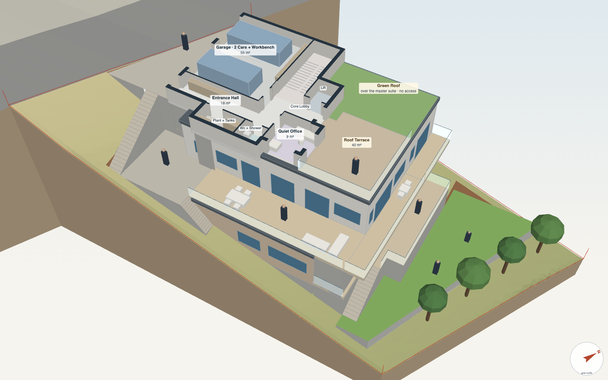
How this floor works
- Front door on the west façade, straight into the entrance hall. At its end the stair and lift are on your left, and a glass door ahead shows the view over the roof terrace.
- Groceries: garage → one door → core lobby → lift is 4 m, all indoors (rule 5.1).
- Two 3.35 m shutters and 4.2 m wide bays, so every car door opens fully. Workbench along the back wall (rule 5.5).
- New in C10: the roof terrace is reached from the lobby, so the family uses it without crossing the office. The roof over the master bedroom is planted and closed, so nobody walks above the bed.
- Office in the quiet SE corner with its own door to the terrace; WC and shower beside it.
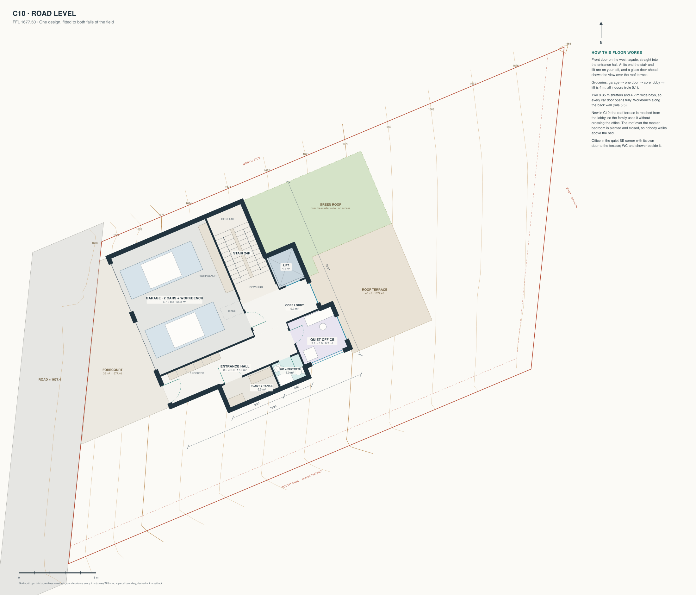
Room sizes on this floor
| Room | Clear size (m) | Area (m²) |
|---|---|---|
| Garage · 2 Cars + Workbench | 6.7 × 8.3 | 55.3 |
| Core Lobby | 4.5 × 2.1 | 9.3 |
| Entrance Hall | 8.9 × 2.0 | 17.6 |
| Quiet Office | 3.1 × 3.0 | 9.2 |
| Wc + Shower | 1.9 × 1.6 | 3.0 |
| Plant + Tanks | 3.5 × 1.6 | 5.5 |
| Roof Terrace (outside) | 40 | |
| Green Roof (outside) | 41 | |
| Forecourt (outside) | 36 |
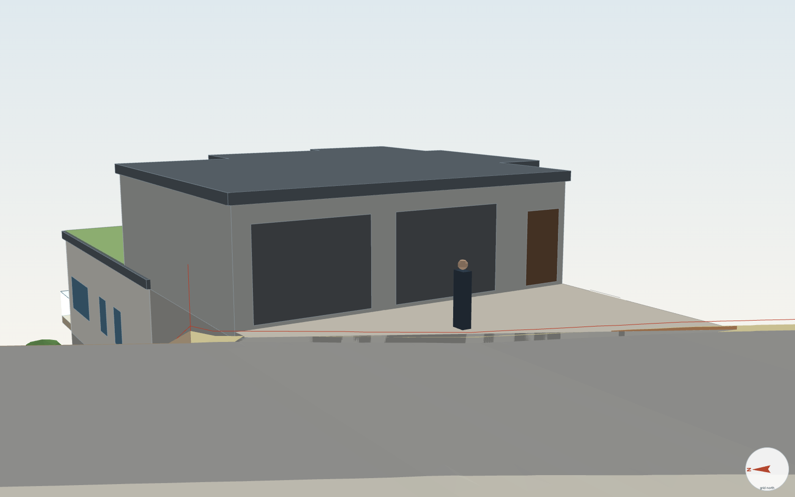
Main Floor
The family's day floor, one level below the road. Floor at 1673.60.
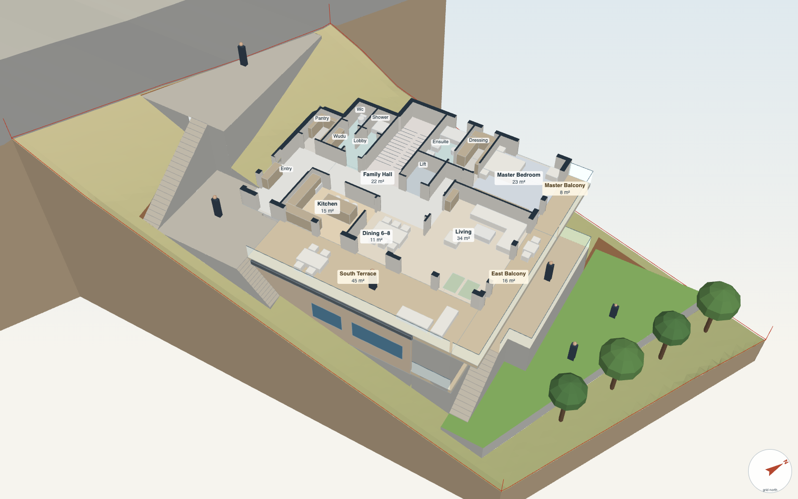
How this floor works
- Kitchen on the south with a 1.6 m slider onto the south terrace and the sink under a south window (rules 1.1, 1.2). Two doorless openings, walls to the ceiling (1.3).
- Kitchen, dining and living each open off the family hall. Nobody crosses one main room to reach another (2.1).
- Living 5.1 × 6.7 m: the sofa corner is in the NE, closed to the north by the master's bookshelf wall, TV on the west wall, prayer and reading corner by the south window (3.1, 3.3).
- New in C10: the master bedroom takes the NE corner with morning sun, the bed facing the view, and its own balcony. Hall → small lobby → bedroom; dressing room and ensuite lie beyond the bedroom (2.5).
- New in C10: the east balcony is 1.6 m deep and wraps the SE corner to join the south terrace: 65 m² of main-floor terrace in total, most of it on the roof of the floor below (4.3).
- Pantry and the wudu/WC cluster use the buried NW, where no window is possible. They need mechanical ventilation.
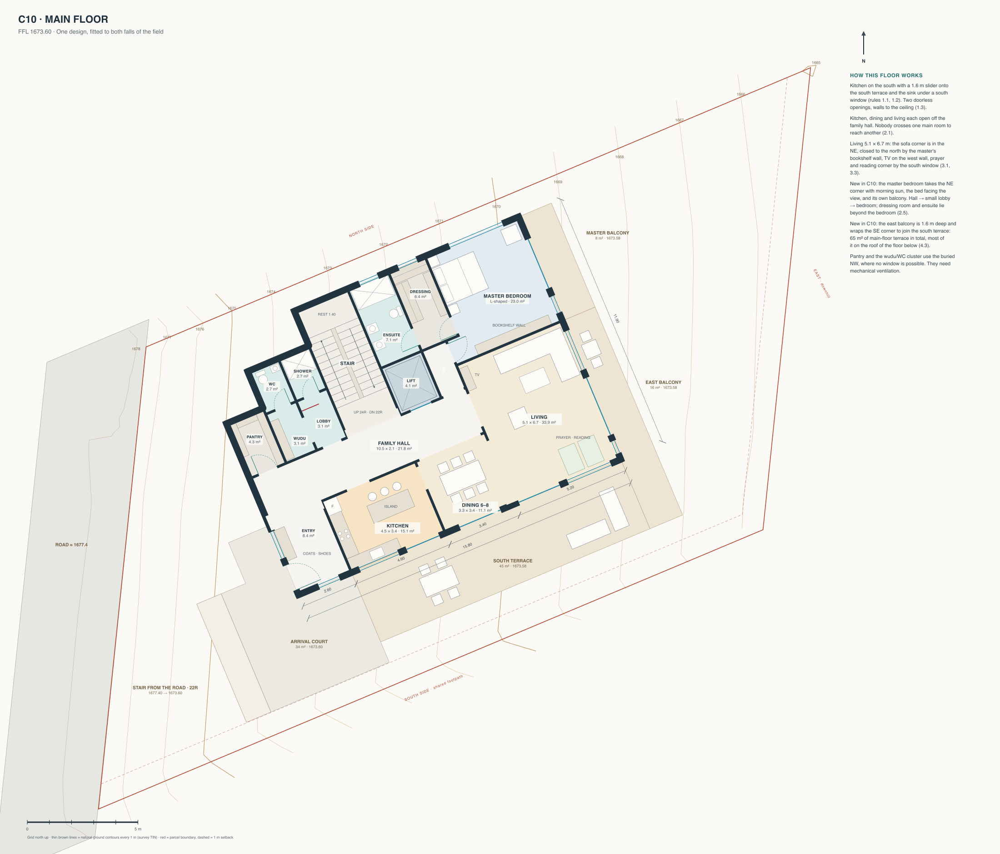
Room sizes on this floor
| Room | Clear size (m) | Area (m²) |
|---|---|---|
| Pantry | 1.7 × 2.6 | 4.3 |
| Wc | 1.4 × 2.0 | 2.7 |
| Shower | 1.4 × 2.0 | 2.7 |
| Wudu | 1.4 × 2.3 | 3.1 |
| Lobby | 1.4 × 2.3 | 3.1 |
| Ensuite | 1.9 × 3.8 | 7.1 |
| Dressing | 1.7 × 3.8 | 6.4 |
| Master Bedroom | L-shaped | 23.0 |
| Family Hall | 10.5 × 2.1 | 21.8 |
| Entry | 2.5 × 3.4 | 8.4 |
| Kitchen | 4.5 × 3.4 | 15.1 |
| Dining 6–8 | 3.3 × 3.4 | 11.1 |
| Living | 5.1 × 6.7 | 33.9 |
| South Terrace (outside) | 45 | |
| East Balcony (outside) | 16 | |
| Master Balcony (outside) | 8 | |
| Arrival Court (outside) | 34 |
Lower Floor + Garden
The children's and grandparents' floor, level with the garden terrace. Floor at 1670.00.
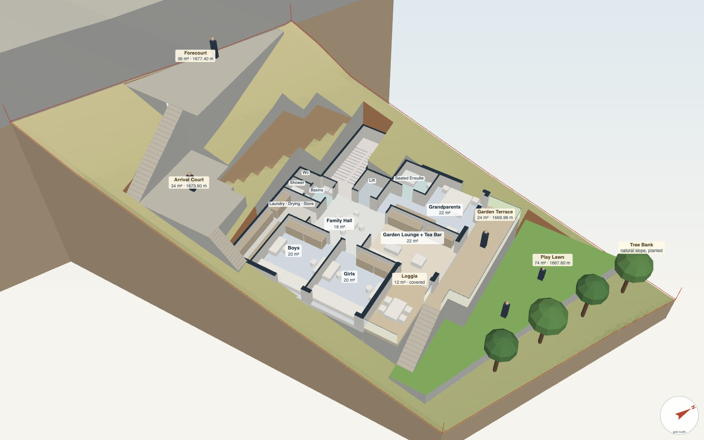
How this floor works
- New in C10: the boys' and girls' rooms sit 1.8 m further east than in C09. Their south windows now look out over the ground. In C09 the boys' wall was buried up to 2 m and faced a dug trench.
- Both rooms keep your 4.3 × 4.8 m, with two beds, two desks and two wardrobes each (rule 6.7).
- New in C10: the buried NW corner is not dug out. WC, shower and twin basins open off the family hall instead of the stair foot; laundry, drying and the household store share one room beside them.
- Grandparents' room in the NE: 2 m from the lift, own step-free ensuite with a seated shower, own door to the garden terrace. Door from the hall straight into the room; no vestibule.
- Garden lounge with tea bar opens east to the terrace and south to a covered loggia. The family hall gets its daylight through the 2.2 m opening to the lounge.
- Garden: terrace and loggia at floor level, 14 steps down to one level play lawn at 1667.60, laid along the contour. Below it the slope stays natural and carries the trees.
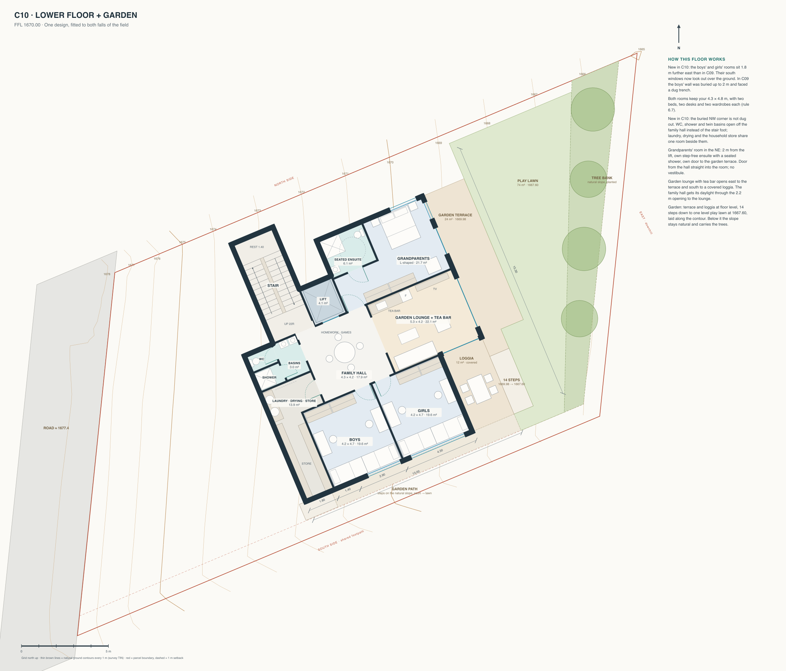
Room sizes on this floor
| Room | Clear size (m) | Area (m²) |
|---|---|---|
| Wc | 1.6 × 1.0 | 1.5 |
| Shower | 1.6 × 1.1 | 1.7 |
| Basins | 1.4 × 2.2 | 3.0 |
| Laundry · Drying · Store | L-shaped | 13.9 |
| Family Hall | 4.3 × 4.2 | 17.9 |
| Boys | 4.2 × 4.7 | 19.6 |
| Girls | 4.2 × 4.7 | 19.6 |
| Seated Ensuite | 2.7 × 2.3 | 6.1 |
| Grandparents | L-shaped | 21.7 |
| Garden Lounge + Tea Bar | 5.3 × 4.2 | 22.1 |
| Loggia (outside) | 12 | |
| Garden Terrace (outside) | 24 | |
| Play Lawn (outside) | 74 | |
| Tree Bank (outside) | 36 | |
| Garden Path (outside) | 11 |
Sections through the hill, and the digging
Four cuts through the house and the ground, drawn in true scale. Two run west → east and two run north → south, so you can see both slopes. The cut lines A–A to D–D are marked on the plan of the field above.

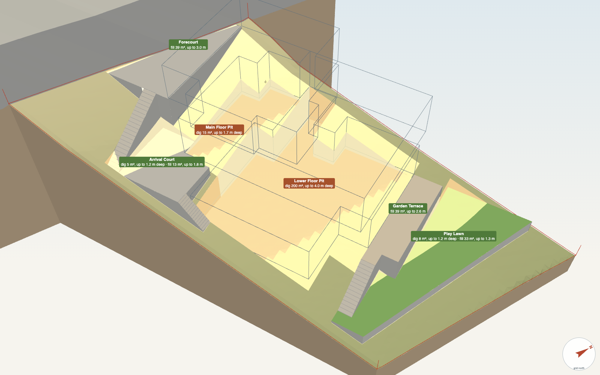
Earthwork
| Where | Area | Dig | Fill |
|---|---|---|---|
| Lower Floor dig | 156 m² | 200 m³, up to 4.0 m | – |
| Main Floor dig | 36 m² | 15 m³, up to 1.7 m | – |
| Forecourt | 36 m² | – | 39 m³, up to 3.0 m |
| Arrival Court | 30 m² | 5 m³, up to 1.2 m | 13 m³, up to 1.8 m |
| Garden Terrace | 24 m² | – | 39 m³, up to 2.6 m |
| Play Lawn | 74 m² | 8 m³, up to 1.2 m | 33 m³, up to 1.4 m |
| Total | ≈ 228 m³ | ≈ 124 m³ |
How measured: house_ai.geospatial.earthworks.integrate on the stored survey TIN (inferred surface); building formation 0.35 m below FFL; excludes footings, batters, bulking, drainage layers. Status: inferred from the survey TIN, not a soil survey.
About half of what is dug out can be used again on the field as fill. The rest, roughly 104 m³, has to be taken away.
What changed from C09
C10 keeps what you liked in C08 and C09: your stair and lift core, your room sizes, the levels, the house ending 18 m from the west. It changes these points.
| C09 | C10 | |
|---|---|---|
| Boys' and girls' rooms | On the south from u 5.0. The boys' south wall was 0.3 to 1.8 m under ground and its window faced a dug trench. | Moved 1.8 m east. Both south windows clear the ground: at most +0.47 m against the floor at one end of the boys' window (sill 0.9 m). |
| Digging | Lower-floor pit 240 m³, deepest cut 4.38 m. A bathroom and a riser room were dug into the deepest corner. | Lower-floor pit 200 m³, deepest cut 3.97 m. Those two rooms are not dug. The bathroom moved beside the family hall. |
| Master suite | C09-1: bedroom 19 m², dressing 2.8 m², ensuite 4.1 m². C09-2 had the bigger suite but no outdoor space. | Bedroom 23 m² in the NE corner, dressing 6.4 m², ensuite 7.1 m², own balcony, bed facing the view. A bookshelf wall separates it from the living room. |
| Main-floor terraces | 64 m². East balcony 1.4 m deep, not joined to the south terrace. | 69 m². East balcony 1.6 m deep, wrapping the SE corner into the south terrace. |
| Roof terrace (road level) | Reached only through the office. | Reached from the core lobby through a glass door. That door also gives the entrance hall a view. |
| Lower-floor bathroom | One family bathroom, entered from the foot of the stair. | Separate WC, separate shower and twin basins, entered from the family hall. |
| Grandparents | Room behind a vestibule. The bed stood across the garden door. | Door from the hall straight into the room, 2 m from the lift. Bed on the north wall, garden door free. |
| Garden | Paved terrace, then two lawns (71 + 38 m²) on up to 2.6 m of fill, split by a line square to the house. | Terrace and covered loggia at floor level, then one level lawn of 74 m² along the contour (fill up to 1.4 m), then a natural tree bank. |
| Doors and furniture | By the new test, furniture stood in 22 doorways or door swings: a counter across the kitchen terrace door, the fridge in the kitchen opening, a sofa across the lounge door. | All 49 doors and openings are tested with their swings. None is blocked. |
Rule check (OWNER_DESIGN_RULES.md, rule 8.1)
Each of your rules, with how it was checked. “Measured” means a script tested the geometry. “Designer's judgement” means I looked and decided. “Your decision” means the rule is not clearly met or not clearly broken, and you should choose.
| Rule | Status | Evidence |
|---|---|---|
| 2.3.voids.road | PASS · measured | enclosed leftover holes in plate: 0 |
| 2.3.voids.main | PASS · measured | enclosed leftover holes in plate: 0 |
| 2.3.voids.lower | PASS · measured | enclosed leftover holes in plate: 0 |
| 1.1 kitchen→south terrace | PASS · measured | kitchen south wall is façade=True; door(s) [1.6] m onto ['SOUTH TERRACE'] |
| 1.2 kitchen prime frontage | PASS · measured | kitchen spans u 4.6–9.2 on the south façade |
| 1.3 semi-open kitchen | PASS · measured | 2 doorless portals: [('hall', 'kitchen', 1.1), ('kitchen', 'dining', 1.1)]; full-height walls otherwise |
| 1.5 kitchen/dining right-sized | PASS · measured | kitchen 15.1 m², pantry 4.3 m², dining 11.1 m² (3.28 m wide), open to the living room (stmt-024) |
| 2.1 every main room off a hall | PASS · measured | reachable without crossing another main room: {'dining': True, 'kitchen': True, 'living': True, 'master': True, 'boys': True, 'girls': True, 'guest': True, 'lounge': True} |
| 2.5 master not through closet | PASS · measured | bedroom door(s) from ['dress', 'mlob'] |
| 2.6a front doors on the west façade | PASS · measured | road door u=0.0 into hall-r; main door u=2.0 into entry; both open-sky, no passage |
| 2.6b straight line door → stair/lift | YOUR DECISION | Road (the daily front door): door → 7 m straight hall → stair and lift on the left, glass door to the roof terrace ahead. Main (the court door): door → entry → turn north → turn east along the hall to the stair, two turns as in C09. A door on the hall axis would sit under the garage slab, the passage you rejected. Your call. |
| 3.3 living ~34 m², ≥5.0 m wide | PASS · measured | living 33.9 m², 5.0 m clear square fits=True |
| 3.1 cozy corner, north closed | designer's judgement | living north edge v=6.2; north neighbour = ['MASTER BEDROOM'] |
| 4.2 steps east going down | PASS · measured | west edges road/main/lower u = [0.0, 2.0, 5.0]; east edges u = [12.2, 17.8, 18.0] |
| 4.7 fits the field, ~150 m² east garden | PASS · measured | lower floor ends u=18.0; east garden 151 m² inside the setbacks; gross floor 459 m² |
| 4.3 main-floor terraces | PASS · measured | 69 m² of main-floor terraces/balconies: ['SOUTH TERRACE', 'EAST BALCONY', 'MASTER BALCONY'] |
| 5.5 garage 55–60 m² | PASS · measured | garage 57.1 m² gross |
| 5.1 garage→lift indoors | PASS · measured | door chain garage → core lobby → lift |
| 5.2 one stair, all levels | PASS · measured | stair boxes {(6.8, 1.1, 9.4, 7.3)} |
| 6.5 master main/north + 3 lower bedrooms | PASS · measured | main bedrooms ['MASTER BEDROOM'] (north half=True); lower ['BOYS', 'GIRLS', 'GRANDPARENTS'] |
| 6.1 master ensuite | PASS · measured | ensuite reached from inside the bedroom suite only, never via the hall |
| 6.6 tea/snack bar downstairs | PASS · measured | tea bar counter with sink + under-counter fridge |
| 6.7 owner's 4.3×4.8 children rooms | PASS · measured | boys/girls clear [(4.18, 4.68, 19.6), (4.18, 4.68, 19.6)] |
| I10 guest seated ensuite | PASS · measured | SEATED ENSUITE 6.1 m² |
| I12 laundry 12–14 m² | PASS · measured | laundry 13.9 m² |
| 2.2 no long corridors | YOUR DECISION | main family hall 10.6 × 2.2 m, rooms on one side, open to the stair (2.6 m), the dining room (3.0 m) and the living room. Lower family hall 18 m², square. Not a double-loaded corridor, but long. Your call. |
| 4.4 digging ≤ ~4.5 m | PASS · measured | deepest building cut 3.97 m below natural ground (formation 0.35 m under FFL) |
| 4.1 south + east for day rooms | designer's judgement | on the S/E façades: Kitchen, Dining 6–8, Living; buried NW holds Pantry, Wc, Shower, Wudu, Lobby |
| 2.4 no unnecessary doors | designer's judgement | main floor: 10 doorless openings, 7 hinged doors (bedroom, baths, stores, lobby only) |
| 3.2 living has its own hall entry | designer's judgement | 1.6 m opening straight from the family hall |
| 4.4 earth balance | designer's judgement | building cut ≈ 215 m³; outdoor fill ≈ 124 m³ |
| 5.3 stair at the heart | designer's judgement | stair box u 6.8–9.4 opens 2.6 m wide onto the hall on the road and main floors, 1.2 m on the lower floor |
| 5.4 step-free | designer's judgement | lift reaches all 3 levels and each level is one flat floor. Threshold details are not designed |
| 6.3 stores not in odd places | designer's judgement | household store is the south end of the laundry room, beside the core; plant room off the road hall; pantry off the main hall |
| 7.4 standard, comfortable sizes | designer's judgement | Master Bedroom 23; Kitchen 15; Dining 6–8 11; Living 34; Boys 20; Girls 20; Grandparents 22; Garden Lounge + Tea Bar 22 m² |
| Doors clear of furniture · road floor | PASS · measured | 12 doors and openings checked with their swings; blocked: none |
| Doors clear of furniture · main floor | PASS · measured | 23 doors and openings checked with their swings; blocked: none |
| Doors clear of furniture · lower floor | PASS · measured | 14 doors and openings checked with their swings; blocked: none |
| Windows and doors clear the ground · main floor | PASS · measured | highest natural ground at any window +0.57 m against the floor (sill 0.9 m, limit +0.6); every outside door opens onto a terrace, court or balcony at floor level (+0.00 m). window at (2.0, 10.6): ground +0.57 m |
| Windows and doors clear the ground · lower floor | PASS · measured | highest natural ground at any window +0.47 m against the floor (sill 0.9 m, limit +0.6); every outside door opens onto a terrace, court or balcony at floor level (-0.02 m). window at (9.9, 16.4): ground +0.47 m; window at (16.8, 2.8): ground +0.12 m |
| Daylight in every main room · main floor | PASS · measured | windows and glazed outside doors per room: {'Master Bedroom': 3, 'Kitchen': 2, 'Dining 6–8': 1, 'Living': 5} |
| Daylight in every main room · lower floor | PASS · measured | windows and glazed outside doors per room: {'Boys': 1, 'Girls': 1, 'Grandparents': 3, 'Garden Lounge + Tea Bar': 2} |
Geometry checks on all three floors (no overlapping rooms, everything inside the parcel and the 1 m setbacks, no enclosed leftover holes): all clear. Overlapping labels on the drawings: none.
Your decisions
These are the points where I could not give you everything at once. Tell me which way to go on any of them.
Limits of this study
- Exploratory concept. Nothing here is stored in the project record, and nothing is validated.
- The site is still unconfirmed: UTM zone, datum and the legal boundary. All heights come from the survey TIN, 27 surveyed points with straight interpolation between them.
- Setbacks are the 1 m south and east lines already in the project. No setback is assumed on the north and west. Local rules are not checked.
- Not engineered. Retaining walls (forecourt about 3 m, garden terrace about 2.4 m), foundations, the 1.6 m balcony, drainage behind buried walls and the stair need professionals.
- Not permit-ready, not construction-ready, not checked against any building code.
- Pantry, the wudu and WC group and the lower-floor bathroom have no windows. They need mechanical ventilation.
Rebuild: .venv/bin/python projects/my-house/design/990_2026-11-18_claude-c10/build.py. Geometry is in design.py; plans, sections, the 3D model and the checks are all drawn from it.